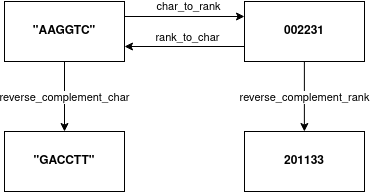

Introduction
A c++20 library for bioinformatics. It provides functionality to work
on nucleotide alphabets (e.g. dna4, dna5, rna4, ...), amino acid
based alphabets and many more.
Basic concepts
The main idea is that data is presented in two states: char space or rank space. In char space the data is stored in an ASCII representation. This also includes same values having multiple representation. For example the string "AAggTc" is semantically equal to "aAGGtC". Many algorithms also benefit by having a dense representation, where all elements are in a very narrow range. For this we have the rank space. For example the values "AAggTc" would be represented as 002231. This is a much compacter representation and removes the duplicated representation.
This library provides the main functionality are char to rank, rank to char and reverse complement.

By definition the char value '\0' (null) and rank value 255 represents invalid value
Integration CMake
Easiest way to use this repository is to clone this as a subrepo into your project, for example to
lib/IVSigma, and then edit your CMakeLists.txt:
add_subdirectory(lib/IVSigma)
# ...
target_link_library(your_project ivsigma::ivsigma)
You can now happily use IVSigma
Code
#include <ivsigma/ivsigma.h>
#include <iostream>
int main() {
auto ranks = ivs::convert_char_to_rank<ivs::dna4>("acgt");
for (uint8_t c : ranks) {
std::cout << (int)c << "\n";
}
}
Output
0
1
2
3
Integration fmt
This library also works easily with {fmt} together.
Code
#include <fmt/format.h>
#include <fmt/ranges.h>
#include <ivsigma/ivsigma.h>
int main() {
auto input = std::string{"ACGnACGt"};
auto output = ivs::convert_char_to_rank<ivs::dna5>(input);
fmt::print("{} => {}\n", input, output);
}
Output
ACGnACGt => [0, 1, 2, 4, 0, 1, 2, 3]